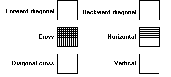

description: There are six predefined logical hatch brushes maintained by GDI. The following rectangles were painted by using the six predefined hatch brushes.
ms.assetid: ac0957db-242a-4d52-9661-2aa9d8571aab
title: Hatch Brush
ms.topic: article
ms.date: 05/31/2018
Hatch Brush
There are six predefined logical hatch brushes maintained by GDI. The following rectangles were painted by using the six predefined hatch brushes.

An application can create a hatch brush by calling the CreateHatchBrush function, specifying one of the six hatch styles.
Â
Â